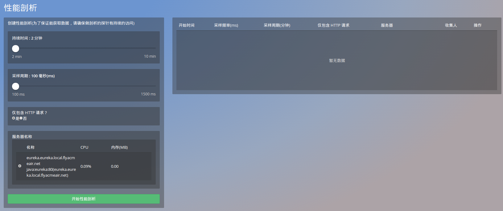
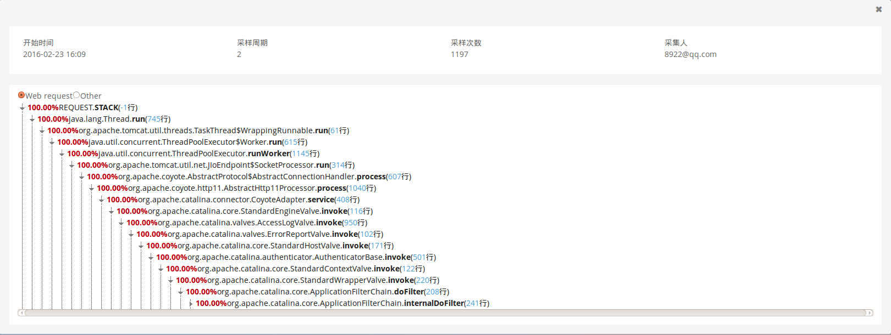

应用>tier>性能剖析
1.性能剖析
- Ai的性能剖析,可以在不影响用户体验的情况下,监控和记录特定时间内执行的线程。
- 性能剖析是一个低强度分析工具,可以用在生产应用程序中识别瓶颈。它是在指定的时间内定期的抓取每个线程的堆栈信息进行聚合形成调用栈。当然我们的调用栈信息并不是记性全量的抓取，但是这足以展现应用程序的性能情况。通过调用栈的信息，我们可以清楚的看到时间是花费在哪里。
- 我们的Ai产品中有两种方法可以进行性能剖析的设置：
- 1.应用>Tier>性能剖析
- 2.关键事务>性能剖析
注意： 性能剖析进行时必须确保剖析的探针具有持续的访问。
应用>Tier>性能剖析
- 针对单个实例，进行线程的抓取。
默认设置：
- 1.持续时间：2min。
- 2.采样周期：100ms。
- 3.可以根据需要进行调整。

剖析页面：
- 剖析页面即线程分析页面，其中包含性能剖析的开始时间、采样周期、采样次数、采样人以及调用栈信息。
- 调用栈信息可以根据需要进行展开和收缩。
- 此处的百分比是根据在采样周期中,该行代码总计被采样到的次数与总采样次数的百分比。代码后括号中的内容是该代码在事务中的行数。
